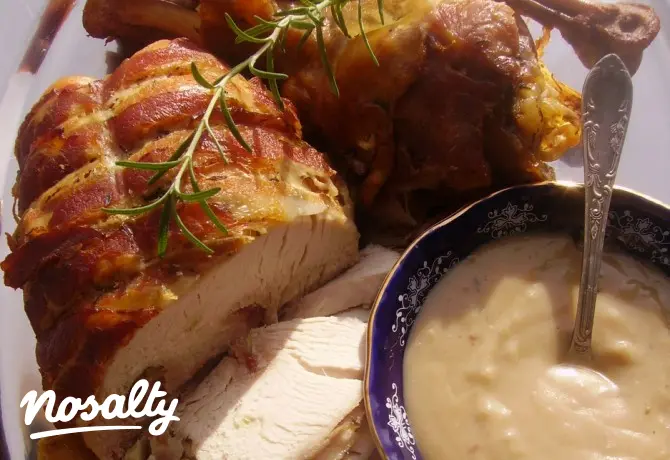

Karácsonyi Receptek
Készítsd el a legfinomabb ünnepi finomságokat!
Ünnepi receptek
Magyaros halászlé
Recept megtekintéseLusta asszony káposztája
Recept megtekintéseMákos - diós bejgli
Recept megtekintéseSütőtökkrémleves
Recept megtekintése
